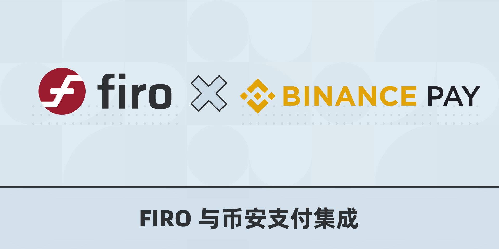

Firo 集成到 Binance Pay
2021 年 11 月 25 日
用 Firo 购物或将 Firo 发送给世界各地的朋友和家人

Firo 已集成到 Binance Pay 中，Binance Pay 是一种无接触、无界限、安全的加密货币支付技术。
虽然我们始终建议用户将 Firo 存储在他们自己的 Firo 钱包中，如我们的 QT 或 Electron 钱包，它完全支持我们所有的隐私功能，但现实是许多用户将他们的 Firo 存储在 Binance 上。
Binance Pay 为现有的 Binance 用户提供了一种简单方便的方式来即时支付、接收和发送 Firo 并与已经接受 Binance Pay 的商户（如 Travala）轻松集成。
你可以访问 Binance 市场查看支持的商户名单。Firo 核心团队正在接触这些尚未接受 Firo 的商户！
这种集成鼓励更多的人采用 Firo 作为支付方式，并扩大我们的商户基础。
除了 Binance Pay，希望以方便的方式接受 Firo 的商户也可以使用 NOWPayments 或 CoinPayments。我们还邀请我们的社区与使用这些支付网关的现有商户联系增加 Firo 作为支付选项！